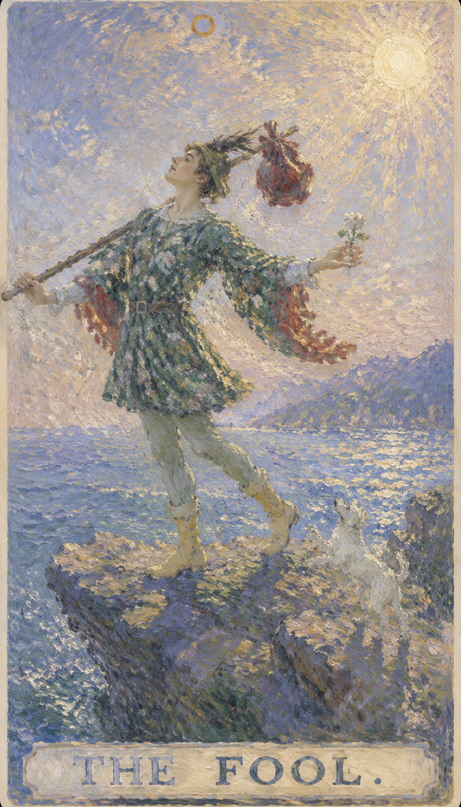

— 貳 · CORRESPONDENCES
对应要素Esoteric Correspondences
- 元素 Element
- 风风 · 思想、沟通与心智的流动
- 天体 Celestial
- 天王星Uranus · 变革、颠覆与独立之星
- 生命之树 Tree of Life
- Aleph第11条路径 · 联结王冠 (Kether) 与智慧 (Chokmah)
- 希伯来字母
- Aleph第一个字母 א · "公牛"，潜在的创造能量


愚者是整副塔罗旅程的第一口呼吸。他还没有被经验塑造成固定的样子，因此带着天真、好奇与一点不知危险的勇气，走向未知的悬崖。 这张牌把人带回最初的开放状态。鲁莽只是它的阴影；真正的愚者，怀抱着对生命的信任，愿意让道路在脚下逐渐显现。愚者活在当下，正经历着"现在"的力量——那些活在过去或未来的人，或许会笑他对眼前的执着是愚蠢，却不明白：我们最大的力量，正是此刻所拥有的。过去无法改变，未来难以掌握，唯有现在，我们能去做、去感受、去相信。
← 返回大厅 / 选择其它卡牌牌面中身穿斑斓彩衣、戴着小丑帽的年轻人，在悬崖边昂首阔步。他右手握着象征潜能的权杖，背上的小包袱装满尚未启用的经验，头上的桂冠暗示成功的可能。左手捧着白玫瑰，白色象征纯洁，玫瑰象征热情，也代表天真无知。脚边的白犬凭本能行事，既是忠诚的陪伴，也是提醒现实危险的警讯。他目光投向远方神情欢愉，对脚下深渊浑然无惧，仿佛深信生命会托住他。远处的雪山是他未来的旅程，而身后白色的阳光，知道他从何而来、将往何处。
愚者正位，表示在人事物中"潜意识认为应该这么做，并且做了"；愚者逆位，则是"潜意识想做就做"。正逆位的差别，在于潜意识是否对人事物做过甄别。它的共同特点是：主观上没有预设的想法，客观上也没有明确的目的——一切凭着当下的直觉与本能展开。
牌面中身穿斑斓彩衣、戴着小丑帽的年轻人，在悬崖边昂首阔步。

未知与风险的边界。即将迈出的一步，可能是跨向新事物的一大步，也可能是危险的开始。
忠诚与保护的本能，也在提醒愚者注意即将到来的危险，是现实中的警讯。
纯真、无邪的动机与开放的心。白色象征纯洁，玫瑰象征热情。
愚者带着的资源与才能，象征灵魂所需的种子，可能尚未被完全利用或发现。
难以逾越的障碍与高大的目标，也是未来的精神旅程与考验。
清晰、纯洁与觉醒的精神，是生命力、祝福与新的开始。
帽形呼应无限符号，代表无限可能；红羽象征激情与活力。
多彩衣饰代表无忧无虑的自由精神，花朵图案表现纯真与少年心态。
愚者无忧无虑地迈步，是自信，也可能是无知的自信。
鞋色暗示精神旅程中的实际步伐，绿袜象征生长与与自然的连接。
数字 0 是尚未成形的圆，也是无限可能的容器。它不属于任何固定阶段，却能穿越全部阶段，象征从无到有、从空白到经验的旅程。
愚者的 0 号也说明他既可以是旅程的开始，也可以是旅程中的任何时刻。当人愿意放下旧身份，以新眼光面对世界，就会再次成为愚者。

**关键词**：新的起点，自由，好奇，本能，无意识，现在正是好时机，开端，起源，清白，天真，纯真，单纯，自发性，自然，自由精神，不拘一格，冒险，无畏，潜力，直觉，灵感，轻装上阵，旅行，尝试
正位的愚者表示你正站在新路口。完整答案尚未出现，开放、诚实与行动的勇气已经足够点亮第一步。你正在冒险、正在探索，拥有无边界的梦想与无限的潜力；你相信未知，相信自己的直觉，无拘无束、充满活力地踏上旅程。
新的起点，自由，好奇，本能，无意识，现在正是好时机，开端，起源，清白，天真，纯真，单纯，自发性，自然，自由精神，不拘一格，冒险，无畏，潜力，直觉，灵感，轻装上阵，旅行，尝试
风 元素 · 开启、滋养与自我调和
健康生活上适合重新开始，例如调整作息、尝试运动、旅行散心。愚者鼓励一种焕然一新的生活态度，让身心回到轻盈、好奇的状态。但要避免冒险行为、粗心受伤或忽略身体发出的提醒——珍惜身体这副旅途中的行囊，基本的保护需要放在前面。
可能代表旅行、搬家、辞旧迎新、临时决定、自由职业、未知机会，也包括吸取经验教训、憧憬自然、毫无目的地前行、四处流浪、喜欢尝试新鲜挑战。若问结果，正位通常表示事情会开启，但后续发展取决于你是否愿意边走边学。

**关键词**：鲁莽，逃避责任，判断不足，幼稚，延误，缺乏计划，冒险过度，情绪低落，时机不对，陷入停顿，漫无目的，行为散漫，自负，固执，轻率，大意，不顾一切，承担风险，无知，失误
逆位的愚者提醒你重新理解自由。缺少准备、边界和基本判断时，机会容易滑向失误。它常暗示：当你被要求有所承诺时，却想从责任中寻求解脱，正在找一个脱身之道——然而此刻并非这么做的时机。现在该是对自己的将来有所承诺、或解决过去遗留问题的时候，处理完那些未竟之事，你才能重新过上自发而自由的生活。
鲁莽，逃避责任，判断不足，幼稚，延误，缺乏计划，冒险过度，情绪低落，时机不对，陷入停顿，漫无目的，行为散漫，自负，固执，轻率，大意，不顾一切，承担风险，无知，失误
风 元素 · 延迟、失控与过度自我沉溺
健康上要注意意外伤害、作息紊乱和危险尝试。逆位愚者提醒人珍惜身体这副旅途中的行囊，把基本保护放在前面。情绪上也容易低落、漫无目的，需要为自己重新找回方向感与节律，避免因散漫而透支健康。
事情可能因为准备不足而延迟，也可能出现临时取消、走错方向、半途而废，或旅途中断、行为不检点、无视自己的错误。先整理路线、看清现实，再重新出发，会比仓促前进更稳。

当愚者出现在三牌阵中，它象征的是能量在时间维度上的显现。点击下方卡牌揭示隐秘启示。
从前的你更天真、冒险或无忧无虑，不受传统束缚，常愿尝试新事物。
一种自由自在的生活态度，对未知的接纳；你正享受新鲜感，或准备踏上新旅程。
新的机遇与经历即将到来，保持乐观积极，因为前路充满无限可能。